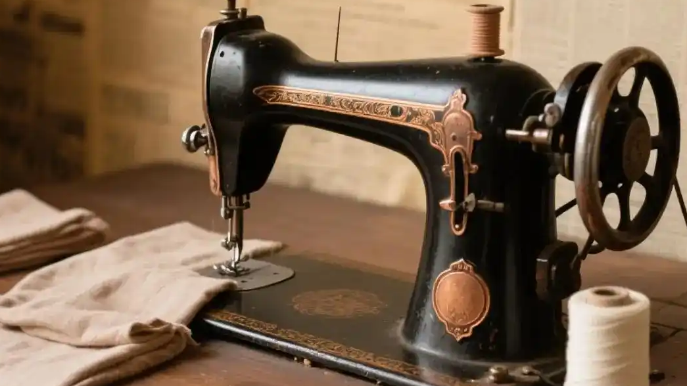

缝纫机，这个曾流行于上世纪七八十年代的"结婚大件"，在不少家庭的角落里吃灰了多年。许多人提到它时还会一脸惊讶：这个行业还在？但最近出现了一个反直觉的现象——无数人唱衰的家用缝纫机，竟然重新翻红了，有的品牌甚至已经卖断了货。
在社交平台上，"改裤脚""做娃衣""拼布手工"等内容持续走热，带动一批老牌和新兴缝纫机品牌的销量回暖。从二手平台到电商直播间，这台机器被重新摆上了台面。
一台被时代"判过死刑"的小家电，悄然回来了。
所以这不是一次简单的怀旧回潮，而是"悦己型小消费"的又一次显形。
表层看，是网红带货和怀旧情绪把它重新推到台前；但更深一层，是消费心态的变化。快时尚退潮后，人们更愿为"耐穿、可修、能改"买单，缝补与改造成了一种低成本的自我表达。
再加上环保与"断舍离"理念普及，自己动手修补旧物被赋予了新的价值感；而缝纫本身带有的解压属性，也让它成为不少年轻人下班后的"精神自留地"。它卖的早已不是"必需"，而是一种可掌控的小确幸。
当"买新的"不再唯一正确，"动手改"反而成了一种态度。
缝纫机卖的从来不是机器，是"亲手做点什么"的掌控感。
从行业视角看，大家电消费整体承压的当下，缝纫、熨烫、刺绣这类细分小家电反而展现出了韧性。内容电商与圈层社区，把原本小众的需求高效地撮合到了一起。
国产品牌借平替与性价比切入，直播与手作博主承担起"种草"角色，供给端也被激活。不过也要看到，这类热度高度依赖内容平台的流量周期，若只靠一时话题，很容易又变回柜中摆设。
热度来得快，能不能留得住，才是真考题。
真正能留下来的，是那些能把"兴趣"做成"复购"的长期主义者。
回到那台落灰的缝纫机：屏幕跳着直播间的下单提示，而它真正需要的，是一双愿意踩下踏板的手。
缝纫机的翻红，给沉闷的小家电市场提了个醒——消费者的需求从未消失，只是换了模样。谁能接住这份"想动手"的心思，谁就能在逆风里转出自己的节奏。愿每一台被重新搬上桌的机器，都缝补的是生活，而不是焦虑。